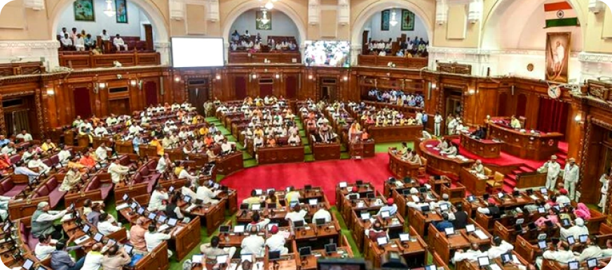
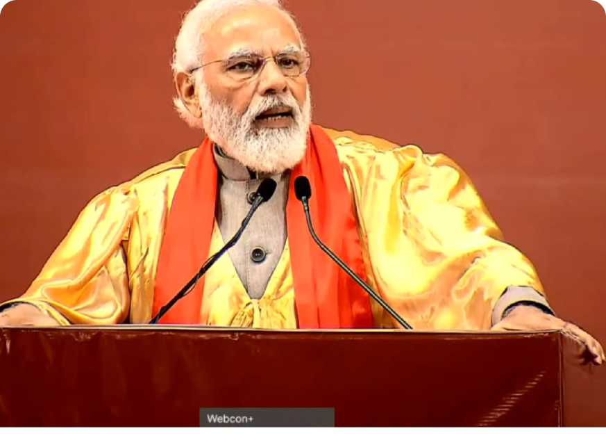
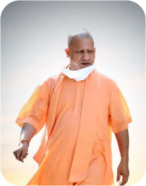

Find the details of the two Uttar Pradesh Legislative Assemblies of recent times, including the Incumbent Assembly and the vision our Vidhan Sabha holds for a better tomorrow.
 1.png)
A peek at some of the initiatives
taken by the Speaker of the House
which include a session held for
and by women members, along with
information and headliners on the
seventeenth and eighteenth
Assemblies as well as an insight
into the Vision the Incumbent
Assembly holds for a better
tomorrow.
Speaker
 Shri Hriday
Shri Hriday
Narayan Dixit
17th Assembly
Government formed by the Bharatiya Janata Party Leader of the House Shri Yogi Adityanath Speaker of the House Shri Hriday Narayan Dixit Leader of Opposition Shri Ramgovind Chaudhary
Government formed by the Bharatiya Janata Party Leader of the House Shri Yogi Adityanath Speaker of the House Shri Hriday Narayan Dixit Leader of Opposition Shri Ramgovind Chaudhary
Leader of Opposition
 Shree Ramgovind
Shree Ramgovind
Chaudhary
Leader of Opposition

Adityanath
Yogi
Yogi
Speaker
Shri Satish
Mahana
Shri Satish
Mahana
18th Assembly The Bharatiya Janata Party formed the government with an absolute majority. Leader of the House Shri Adityanath Yogi Speaker of the House Shri Satish Mahana Leader of Oposition Shri Akhilesh Yadav
Leader of Opposition
 Shri Akhilesh
Shri Akhilesh
Yadav
Shri Akhilesh
Yadav
Leader of Opposition
Adityanath
Yogi
Yogi
The 17th Vidhan Sabha was witness to the first ever time Lucknow organised the Seventh Conference of the
Commonwealth Parliamentary Association within the premises of the Vidhan Bhavan, hosting dignitaries from
Australia, Malaysia, and Mauritius among others.
A milestone in the history of the Uttar Pradesh Legislature was achieved when the proceedings on the birth
anniversary of Mahatma Gandhi concluded uninterrupted for 36 hours.
The practice of Anglo-Indian nomination in the Lower House of the state ended under this Assembly’s
tenure.
On June 6th, 2022, Shri Ramnath Kovind – the then President of the Country – addressed the Houses of the state
in view of the Aazadi ka Amrit Mahotsav year.

 1 (1).png)
Since its very inception, the Uttar Pradesh Legislative Assembly has been and continues to be the
architect and driving force of political and social change in the country. The Vidhan Sabha has
continuously taken the lead in paving new paths to innovation within our legislative

process. In the same spirit, the incumbent Assembly has traced a trajectory of inventive initiatives it
aims to accomplish to provide a new dimension to the parliamentary affairs within the state. There is
dedicated work afoot over the simplification of the rules and procedures of the Assembly’s functioning.
There are also substantial plans to make ‘the best MLA of the year award’ a recurring tradition in the
Assembly. It seeks to make frequent organisation of a Youth Parliament, regular seminars on Parliamentary
Journalism, and a guided tour of the very building where all these works come together a regular feature in
the state. The Uttar Pradesh Vidhan Sabha is continually on a ceaseless road of furthering traditions in
parliamentary processes to increase efficiency and better the legislative process, making themselves more
accessible to the public and keeping it democratic in a true sense.

Shri Satish Mahana was unanimously elected as the Speaker of the House on March 29th of 2022. Elected for the
eighth consecutive time as a member of the House, he is one of the senior-most members of the Vidhan
Sabha.
One of his initiatives has been making the Vidhan Sabha more digital and Hi-tech, taking forward the ‘Digital India’ program of the incumbent Prime Minister, Shri Narendra Modi. The Sabha Mandap has been equipped with new technology and equipment. By implementing E-Vidhan from the very first session of the Eighteenth Vidhan Sabha, the proceedings of the incumbent Assembly have been largely digital and paperless, making this initiative a much-needed step for a greener tomorrow.
In addition to this, the members’ birthdays are now expressly wished for during the sessions of the House.
With efficiency as the goal when it comes to forming legislations for the
One of his initiatives has been making the Vidhan Sabha more digital and Hi-tech, taking forward the ‘Digital India’ program of the incumbent Prime Minister, Shri Narendra Modi. The Sabha Mandap has been equipped with new technology and equipment. By implementing E-Vidhan from the very first session of the Eighteenth Vidhan Sabha, the proceedings of the incumbent Assembly have been largely digital and paperless, making this initiative a much-needed step for a greener tomorrow.
In addition to this, the members’ birthdays are now expressly wished for during the sessions of the House.
With efficiency as the goal when it comes to forming legislations for the